pedro engel
Predicciones para recibir
este blue moon 2023
este blue moon 2023
Encuentra tu signo y descubre
lo que trae blue moon para ti
este 30 de agosto.
lo que trae blue moon para ti
este 30 de agosto.
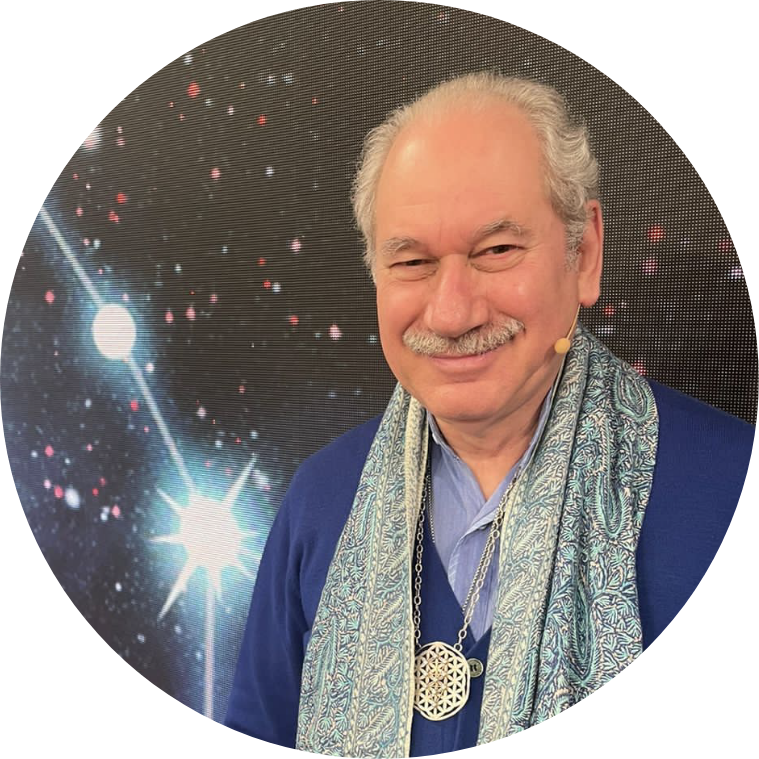
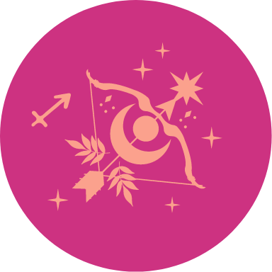
sagitario
Hierba cítrica, estrella de la cultura
asiática con propiedades antioxidantes,
analgésicas y antiinflamatorias. Perfecta
para promover el descanso y
recuperación de nuestro cuerpo.
asiática con propiedades antioxidantes,
analgésicas y antiinflamatorias. Perfecta
para promover el descanso y
recuperación de nuestro cuerpo.
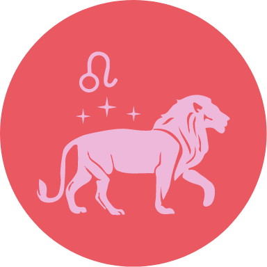
leo
Está pasando por un periodo de éxito. En
el trabajo excelente, pero debe solucionar
diferencias con socios o con
personas con las que trabaja, que posiblemente han
dicho cosas que le hirieron. El silencio
interior lo llevará a las grandes ideas.
Tenga paz, paciencia y verá como lo que
desea se cumplirá sin mayores problemas.
el trabajo excelente, pero debe solucionar
diferencias con socios o con
personas con las que trabaja, que posiblemente han
dicho cosas que le hirieron. El silencio
interior lo llevará a las grandes ideas.
Tenga paz, paciencia y verá como lo que
desea se cumplirá sin mayores problemas.
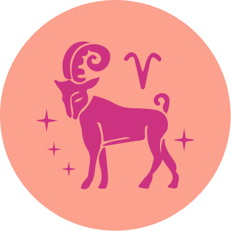
aries
En momentos como estos debes saber
escuchar tu corazón, saber qué te hace
feliz, así que no dudes en seguir tus
sentimientos. Basta con que sienta las
ganas de hacerlo y esto dé prioridad a
sus ideales, para que la vida tenga un
sentido. Estará lleno de entusiasmo ante
las perspectivas amorosas que se abren,
considérese afortunado de tenerlas.
escuchar tu corazón, saber qué te hace
feliz, así que no dudes en seguir tus
sentimientos. Basta con que sienta las
ganas de hacerlo y esto dé prioridad a
sus ideales, para que la vida tenga un
sentido. Estará lleno de entusiasmo ante
las perspectivas amorosas que se abren,
considérese afortunado de tenerlas.
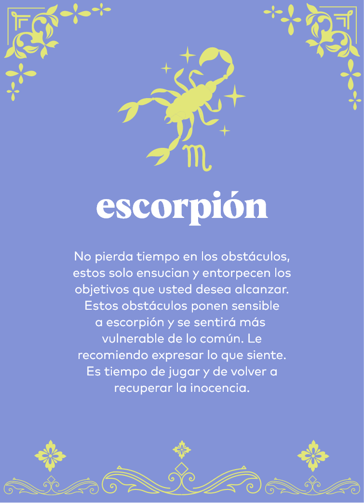
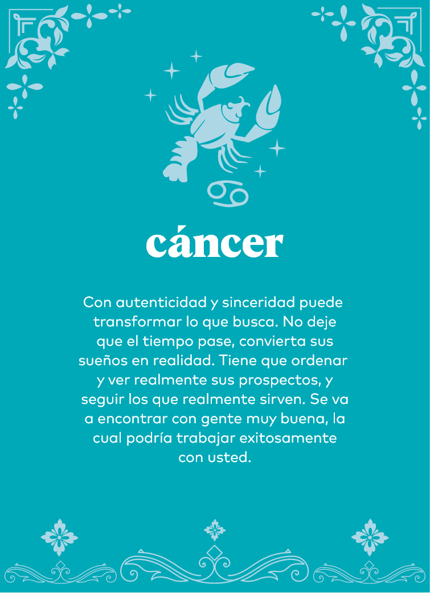
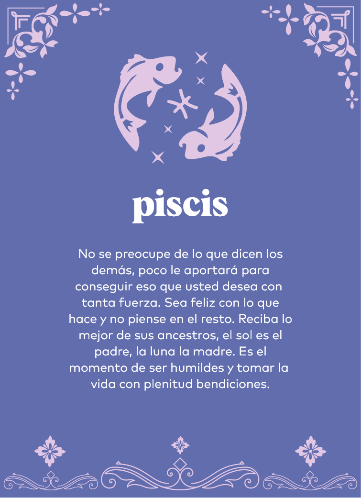
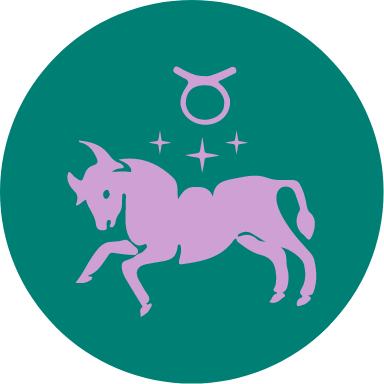
tauro
Debe dar lo que busca. Si quiere amor,
entregue amor y ayude a que los demás
también obtengan lo que buscan. Mientras
ayuda a otros a encontrar la prosperidad,
hay más seguridad de obtener lo que usted
quiere. Ojo con esas ofertas que parecen tan
convenientes, solo le distraen del objetivo
principal, que es asegurar la economía
personal. Enfóquese en lo concreto,
refúgiese en la tranquilidad y en el silencio
de su hogar.
entregue amor y ayude a que los demás
también obtengan lo que buscan. Mientras
ayuda a otros a encontrar la prosperidad,
hay más seguridad de obtener lo que usted
quiere. Ojo con esas ofertas que parecen tan
convenientes, solo le distraen del objetivo
principal, que es asegurar la economía
personal. Enfóquese en lo concreto,
refúgiese en la tranquilidad y en el silencio
de su hogar.
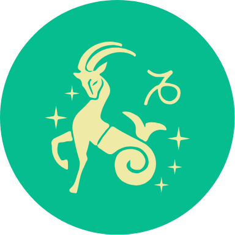
capricornio
No se aferre a los planes que tiene en
su cabeza, la flexibilidad mental lo
llevará a conseguir eso que tanto
desea. La luna llena influye en su día
a día. Debe cuidar sus palabras y
filtrar con el corazón antes de decir
algo que piense. Cuidado con las
peleas o los rencores.
su cabeza, la flexibilidad mental lo
llevará a conseguir eso que tanto
desea. La luna llena influye en su día
a día. Debe cuidar sus palabras y
filtrar con el corazón antes de decir
algo que piense. Cuidado con las
peleas o los rencores.
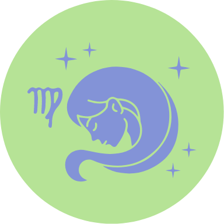
virgo
La gratitud es lo primero. Actuando con
ella, verá como lo que se propone llega a
su vida. El panorama celestial está
despejado, no hay obstáculos para sus
logros y para realizar sus objetivos. La
Luna Azul le hará pasar momentos
felices, alegres y simples que
ensancharán su corazón.
ella, verá como lo que se propone llega a
su vida. El panorama celestial está
despejado, no hay obstáculos para sus
logros y para realizar sus objetivos. La
Luna Azul le hará pasar momentos
felices, alegres y simples que
ensancharán su corazón.
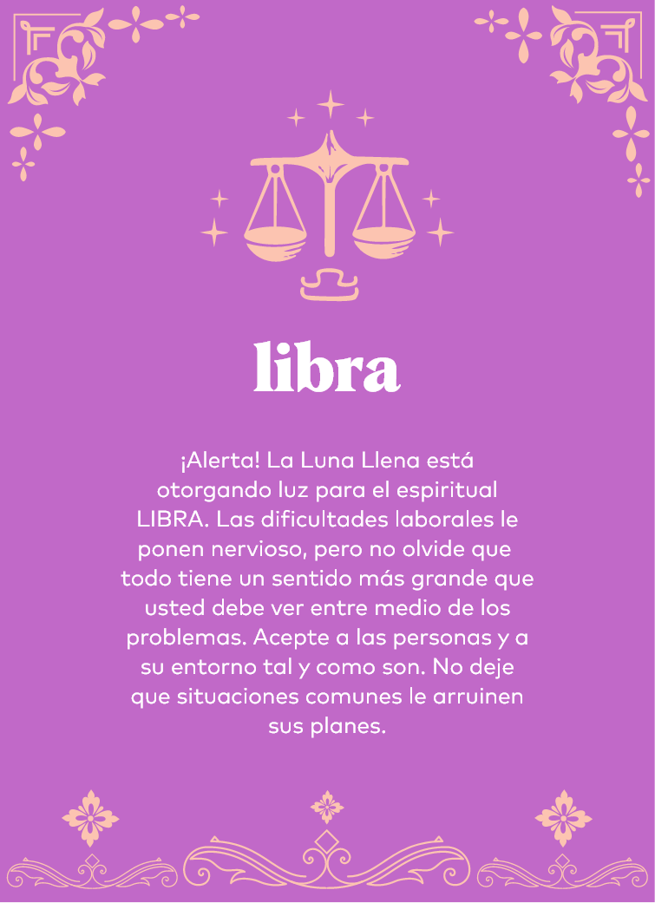
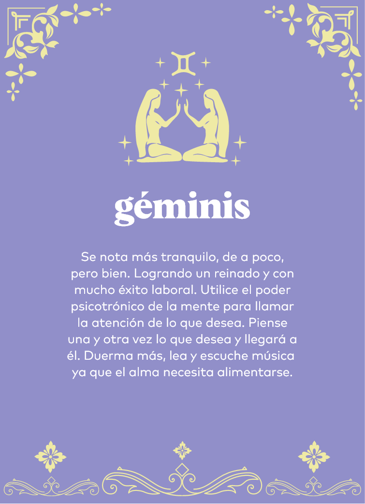
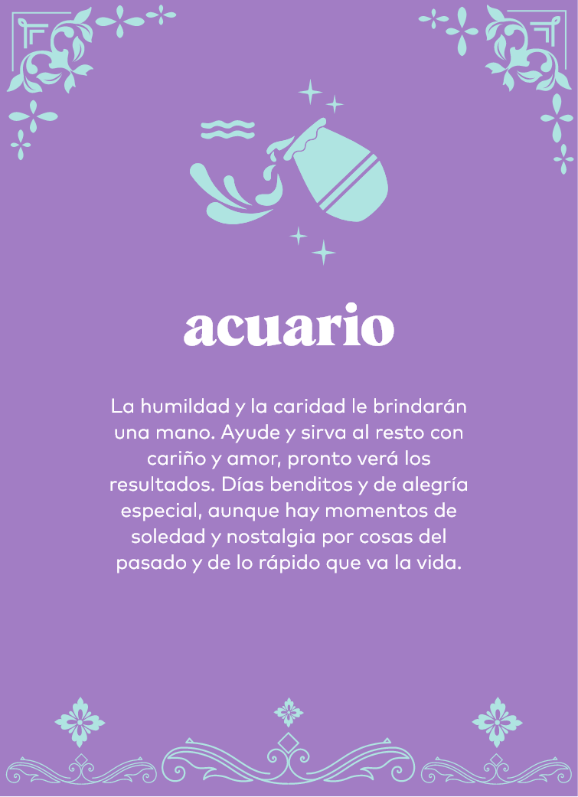